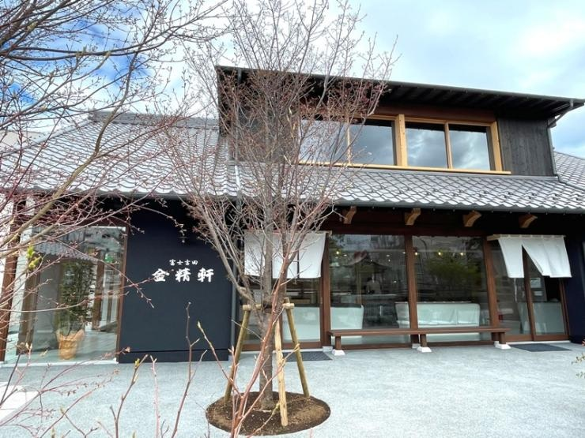

🎉 HAPPY BIRTHDAY YURIKA 🎉
2026.07.18 - 07.20
DAY 1
娘ちゃんはパジャマのまま車へ乗せちゃいましょう。車内で二度寝してくれれば大成功！渋滞前の中央道をスイスイ進みます。
朝7時から開いている絶品おにぎり屋さん。炊きたてホカホカのおにぎりは2歳ちゃんも大好物！パパママも朝から元気チャージ完了です。

富士山が目の前にドーンと見える絶景公園。夏はラベンダーがとっても綺麗！フラットな遊歩道なので、ベビーカーでも、よちよち歩きでも安心して楽しめます。

森の中にある幼児向けのテーマパーク。2歳でも乗れる「赤ちゃんSL」や、可愛いワンちゃんたちと触れ合えるエリアで、娘ちゃんの体力を楽しく発散！
お昼は山梨名物「ほうとう」。麺が太くて柔らかく、かぼちゃの優しい味はお子様にぴったり。お腹がいっぱいになったら八ヶ岳方面へドライブ。娘ちゃんは車内でスヤスヤお昼寝タイム。
子連れに大人気の温泉宿。滑り台やプラレールがある広いキッズルームへ直行！パパママも、貸切露天風呂で周りを気にせず、ゆっくり温泉で旅の疲れを癒やしてくださいね。


DAY 2
カチカチ山の舞台へ！ロープウェイに動く景色に娘ちゃんも釘付け。山頂には可愛いたぬきやうさぎのオブジェがあり、絶好のフォトスポットです。
車で約1時間。ちょうどお昼寝の時間に重なると、車内が静かでスムーズに移動できます。
イタリアンや山のパン屋さんが入っていて、子連れで入りやすいテラス席もあります。
お財布要らずのオールインクルーシブ宿。ここからは大人の癒やし時間もスタート！15:00〜16:30のウエルカム特典をフル活用：
🍕 焼きたてのウェルカムピザをみんなでパクリ！
🍷 大人はビールやサングリア、娘ちゃんはジュースが飲み放題。
🐐 お庭で可愛い看板ヤギさんにおやつをあげるお散歩体験。
🍬 駄菓子がもらえる「宝探しゲーム」や、おもちゃいっぱいのキッズルームへ！


DAY 3
「まきば公園」または「滝沢牧場」へ！八ヶ岳の広大な緑の芝生の上を思いっきりダッシュ！羊や牛を間近で見たり、しぼりたての超濃厚なソフトクリームをみんなで食べましょう。

夏休み期間の平日は、夕方から中央道（上り）が混むことがあります。13:00過ぎに現地を出れば、娘ちゃんは車内でぐっすり夢の中。渋滞を綺麗に回避して、16:00前には鷺ノ宮の我が家に到着できます。